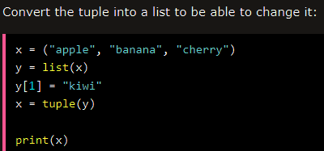

Tuples are immutable sequences
, means it's values are not changeable
different kind of data types can be stored
allows duplicate members
can be indexed using [ ]
Tuples may be constructed in a number of ways:
- Using a pair of parentheses to denote the empty tuple: ()
- Using a trailing comma for a singleton tuple: a, or (a,)
- Separating items with commas: a, b, c or (a, b, c)
Using the tuple() built-in: tuple() or tuple(iterable)
All the common sequence operations can be used in tuples
and things from Collection Data types
Changing Tuple Values
Once a tuple is created, you cannot change its values. Tuples are unchangeable, or immutable as it also is called.
But there is a workaround. You can convert the tuple into a list, change the list, and convert the list back into a tuple.

Adding Items to Tuple
Convert into a list :

Add tuple to a tuple:

Note: When creating a tuple with only one item, remember to include a comma after the item, otherwise it will not be identified as a tuple.
Removing Items from Tuple
Converting Tuple to list:

or del tuple to delete the Whole Tuple